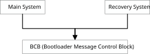
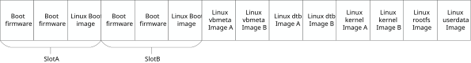
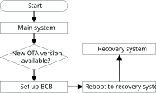
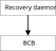
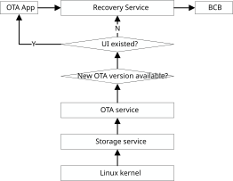
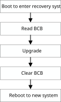
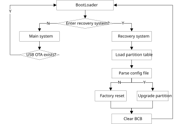
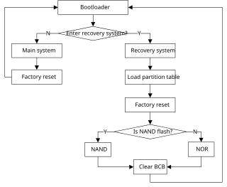

概览
在线下载（OTA）编程提供了一种从各种来源（例如，通过USB磁盘或TCP/IP网络）更新设备firmware的方法。目前，我们提供了一种通过USB磁盘实现OTA firmware升级的解决方案。用户可以参考USB升级解决方案，轻松实现自己的OTA解决方案。
架构
OTA firmware升级通过以下系统模块实现：
主系统
主系统是运行用户应用程序的普通Linux系统。通常，它负责检测来自远程服务器或USB磁盘的新OTA包，并将OTA包下载到本地存储。在检测到并验证OTA包之后，主系统会在BCB（bootloader消息控制块）中设置升级信息，并重新启动系统，以通知bootloader将系统启动到恢复系统。
恢复系统
恢复系统是一个最小化的Linux系统。它负责根据主系统指定的特定OTA包来升级firmware，将OTA包升级到设备。升级完成后，恢复系统会清除BCB（bootloader消息控制块）中的信息，并重新启动系统，以通知bootloader启动到新的主系统。
引导加载程序（bootloader）和BCB
BCB是bootloader消息控制块，是主系统和恢复系统共享的结构，也是主系统和恢复系统之间的桥梁。它可以存储是否进入主系统的信息，并在根据特定路径进行OTA升级时，将OTA包的路径也设置在BCB中。系统启动时，bootloader会读取BCB的内容，进而决定进入主系统还是恢复系统。
三个模块之间的关系如下图所示。
{kind=link}

分区布局
分区布局如下图所列。
{kind=link}

除rootfs和userdata固件外，所有固件都有A/B分区。
Linux dtb image B是用于恢复设备树固件的分区。Linux kernel image B是用于恢复内核固件的分区。Linux vbmeta image B是用于安全恢复vbmeta固件的分区。
下面的固件可以通过OTA更新。目前只有km4_boot_all、km0_km4_app和boot支持A/B槽位更新。
固件名 |
描述 |
支持 A/B 更新？ |
|---|---|---|
km4_boot_all |
启动 firmware |
√ |
km0_km4_app |
Wi-Fi/蓝牙 firmware |
√ |
boot |
Linux 启动固件 |
√ |
vbmeta |
Linux vbmeta 固件 |
x |
dtb |
Linux 设备树固件 |
x |
kernel |
Linux 内核固件 |
x |
rootfs |
Linux 根文件系统固件 |
x |
userdata |
Linux 用户数据固件 |
x |
启用B槽位启动
如果用户需要启用从槽位B启动，则需要将bootloader槽位B地址写入OTP，将槽位B地址设置为0x08300000。板子启动时，执行以下命令到OTP。
# efuse wraw 36C 2 0083
当槽位A和槽位B都被刷写时，系统会检测以确定从哪个槽位启动。一般原则是比较两个槽位的版本号，以检查哪个槽位的版本更高。
BCB与Bootloader
BCB的主要结构是结构体bootloader_message。
//Bootloader Message (2KB)
struct bootloader_message {
char cmd[32];
char status[32];
char recovery[768];
char stage[32];
char reserved[1184];
};
其中只有 cmd 与 recovery 成员被使用到。
成员 cmd 指示板子是进入恢复系统还是主系统。如果设置为 boot-recovery ，则板子启动时将进入恢复系统。否则，板子将进入主系统。退出恢复系统时，该成员将被重置。
成员 recovery 用于存储OTA路径，当有新的OTA包可用时，该成员将在主系统中被设置。
成员 status 用于存储后续的恢复状态，而 reserved 计划用于存储恢复日志。
通过USB进行OTA更新的方案中，仅使用BCB的 cmd 来指示bootloader进入主系统或恢复系统。BCB的其他成员未被使用。
主系统
主系统的流程如下面的图所示。提供了一种从U盘进行OTA更新的解决方案作为参考，该方案实现了从检测到U盘开始到图形用户界面的OTA更新。当U盘中有新的OTA版本时，GUI可以接收到OTA版本的回调，GUI可以决定是否更新此OTA版本。如果没有图形用户界面存在，当检测到U盘中有新的OTA版本时，主系统将设置BCB并重启以自动进入恢复系统。
{kind=link}

主系统的OTA流程如下面的图所示。主系统中的OTA参考实现包含一个恢复守护进程：
恢复守护进程：它将检测是否有U盘连接到板子。如果是，它将尝试从U盘读取OTA包，如果OTA包存在，它将设置BCB并重启板子，以通知bootloader进入恢复系统。
{kind=link}

USB OTA解决方案的流程如下面的图所示。存储服务将检测USB热插拔，并通知OTA服务。OTA服务会检查特定目录中是否有可用的OTA包。如果有可用的OTA包，OTA服务会通知OTA GUI（如果OTA GUI存在），然后通过恢复服务API设置BCB（如果不存在OTA GUI，OTA服务将直接调用恢复服务API）。当BCB设置成功后，恢复服务将重启板子以进入恢复系统。
{kind=link}

恢复系统
恢复流程如下面的图所示。在USB OTA解决方案中，恢复过程将从内核获取USB热插拔回调，并在USB盘的特定目录中检测OTA包，目前OTA目录是USB根目录下的 ota 文件夹（将在后续部分介绍）。如果 ota 文件夹存在且其中检测到OTA包，恢复过程将优先更新此OTA包。如果没有USB连接到板子上，恢复过程将从BCB获取OTA包路径，然后从该路径进行升级。升级完成后，恢复过程将清除BCB，并重启进入主系统。
{kind=link}

恢复安装包流程
在USB OTA解决方案中，当主系统检测到USB插入时，它将设置BCB并重启进入恢复系统。恢复系统将加载分区表，从内核获取USB路径，解析配置文件（flash_image.cfg，配置文件将在后续部分介绍），并根据USB上的配置文件进行升级。恢复的升级流程如下面的图所示。
{kind=link}

恢复出厂设置
恢复系统还提供了出厂重置功能，出厂重置仅用于重置用户数据分区。
当主系统调用相应的API进行出厂重置时，板子将进入恢复系统，出厂重置的流程可以参考下面的图示。
在NAND闪存中，rootfs和userdata采用UBI文件系统，而在NOR闪存中，rootfs使用squashfs，userdata使用jffs2，因此清除userdata在NAND和NOR闪存中有所不同。
{kind=link}

恢复系统 A/B 更新
为了防止系统崩溃，A/B槽位更新用于引导firmware固件、Wi-Fi/蓝牙固件和Linux引导固件。
A/B 分区的信息在上层内存布局中有所描述。
当板子进入恢复系统时，如果上述三个固件需要升级，恢复系统会从 Linux 驱动获取当前槽位信息，然后将 OTA 包更新到另一个槽位。
编译恢复系统
恢复系统内核配置在 <sdk>/sources/yocto/meta-realtek/meta-realtek-bsp/recipes-kernel/linux 目录中定义，kernel-5.4 对应的是 linux-ameba_5.4.bb ，而 kernel-6.6 对应的是 linux-ameba_6.6.bb 。
KBUILD_DEFCONFIG:rtl8730elh-recovery?= "rtl8730elh_recovery_defconfig"
恢复系统具有自己的设备树和内核固件。可以通过以下命令独立生成恢复固件：
source envsetup.sh -m rtl8730elh-recovery -d poky -b <recovery out>
mrecovery
包括设备树和内核固件的恢复固件将在 <recovery out>/tmp/deploy/images/rtl8730elh-recovery 文件夹下生成。
固件名 |
描述 |
|---|---|
|
恢复设备树 blob 固件 |
|
恢复 linux 内核与根文件系统固件 |
烧录恢复固件
本节介绍如何单独将恢复固件烧录到开发板上。
开发板需要进入正常的烧录模式，然后打开 ImageTool，并在
tools/image_tool下加载包含恢复信息的布局，如下图所示。对NAND闪存，载入
XXXX_Linux_NAND_128MB.rdev或者XXXX_Linux_NAND_256MB.rdev，对NOR闪存，载入XXXX_Linux_NOR_32MB.rdev。
烧录恢复固件的步骤如下图所示。

备注
恢复固件需要更新，除非已经更新过恢复固件，否则只需烧录一次即可。
在USB上设置OTA环境
对于 USB OTA 升级，当前的 SDK OTA 支持 USB 中的固件文件和压缩的 gz 文件。无论是固件文件还是 gz 文件，都应该放在 USB 根目录下的 ota 文件夹中。
备注
在 Yocto 项目中，设备树固件（例如：rtl8730elh-va8-generic.dtb` / rtl8730elh-va8-full.dtb）应重命名为 dtb.img 以用于 OTA。
对于 gz 压缩包，其名称必须为 updater.tar.gz，并且需要在所有固件编译成功后生成，例如：tar -czvf updater.tar.gz boot.img dtb.img kernel.img rootfs.img userdata.img flash_image.cfg。文件 flash_image.cfg 是配置文件，是进行 OTA 更新所必需的，具体内容将在后面的章节中描述。
在 Windows 上设置 USB OTA 环境：
在 USB 根目录中创建一个名为 ota 的文件夹。
将需要刷写的固件文件和配置文件（
flash_image.cfg）放入 OTA 目录。例如，如果用户想要更新 Linux 引导固件、Linux 内核固件、Linux dtb 固件和 Linux 根文件系统固件，则将boot.img、dtb.img、kernel.img、rootfs.img和flash_image.cfg放在 USB 的ota文件夹中。修改
flash_image.cfg文件以刷写所需的固件。开发者只需修改flash_type部分来启用或禁用对应固件的刷写。如果flash_type设置为 1，则刷写该固件；如果设置为 0，则不刷写。在下图中，boot.img、dtb.img、kernel.img、rootfs.img将会被刷写到板子上，其他的则不会被刷写。
下面所列为一个示例：
{
"skip_md5_check" : "1",
"images" : [{
"name" : "KM4 boot",
"path" : "km4_boot_all.bin",
"flash_type" : 0
}, {
"name" : "KM4 image2",
"path" : "km0_km4_app.bin",
"flash_type" : 0
}, {
"name" : "AP boot image",
"path" : "boot.img",
"flash_type" : 1
}, {
"name" : "AP vbmeta",
"path" : "vbmeta.img",
"flash_type" : 0
}, {
"name" : "Device tree blob",
"path" : "dtb.img",
"flash_type" : 1
}, {
"name" : "Kernel image",
"path" : "kernel.img",
"flash_type" : 1
}, {
"name" : "Squashfs filesystem",
"path" : "rootfs.img",
"flash_type" : 1
}, {
"name" : "ubi/jffs2 filesystem",
"path" : "userdata.img",
"flash_type" : 0
}
]
}